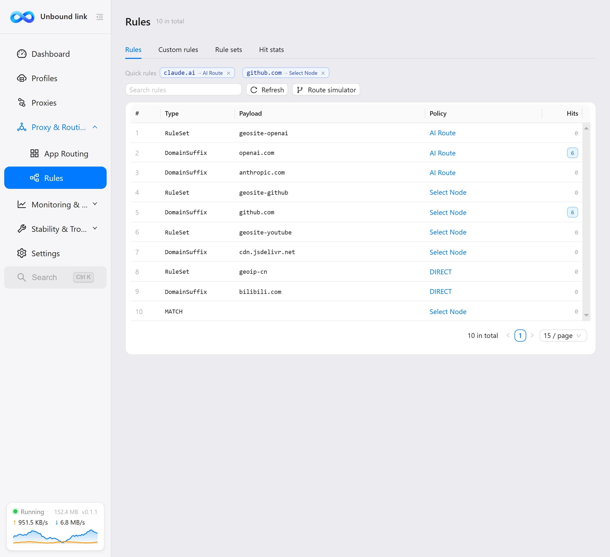
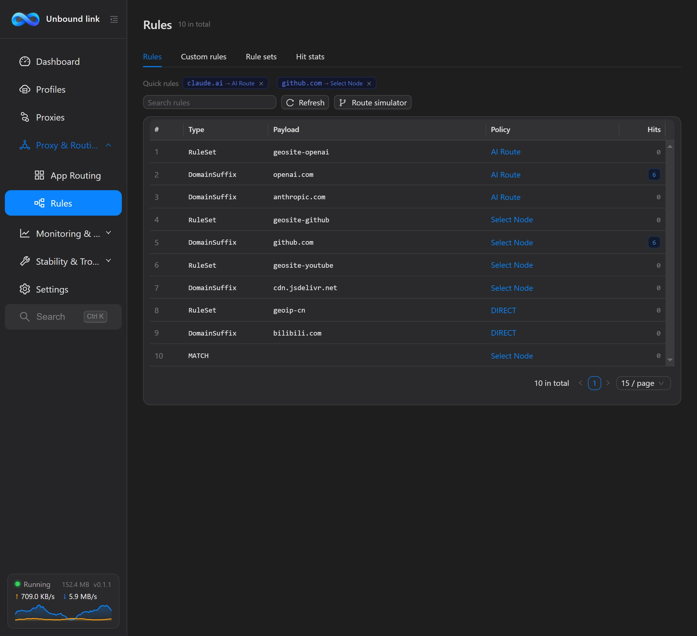

Rules
The Rules page answers "which line does which traffic take": it lists the rules in effect, the rule sets your subscription references, and how often each rule is actually hit.


Four tabs
Four tabs at the top: Rules, Custom rules, Rule sets and Hit statistics — different facets of the same rule set: "what rules exist", "which extra rules I want", "where they come from" and "how well they're used". Switch tabs to view each without leaving the page.
Rules
The default first tab lists every rule in the current runtime config. Data comes from the exact config the core reads — your subscription and overrides combined. Four columns:
| Column | Meaning |
|---|---|
| Type | The match type, e.g. DOMAIN-SUFFIX, GEOIP and so on. |
| Match | The domain, IP range or region this rule matches. |
| Policy (exit) | Where matched traffic exits — usually a proxy group, a node name, or a built-in policy like DIRECT or REJECT. |
| Hits | How many times this rule has been hit in total. |
Rule counts are often large, so filtering and search sit above: filter by type or search the match content by keyword. Long results paginate automatically to help you find a specific rule.
Custom rules
The Custom rules tab is a visual editor: add, edit and reorder your own routing rules without hand-writing config files. On Save & apply they are injected at the very top of the runtime rules in list order, outranking quick rules and subscription rules.
Editing is draft-style: changes stay on the page, a Discard changes button and an unsaved-changes note appear, and nothing is written until you click Save & apply, which hot-reloads the core; Discard changes restores the saved state. The table shows all rules in the draft with six columns: #, Type, Match, Policy, Extra and Actions. Each row has four buttons: Move up, Move down, Edit and Delete; higher rows have higher priority, and Move up on the first row and Move down on the last are disabled.
Click Add rule or a row's Edit button to open a form with four fields:
| Field | Notes |
|---|---|
| Rule type | e.g. DOMAIN-SUFFIX, GEOSITE, IP-CIDR; type freely or pick from the common suggestions — values are upper-cased automatically. |
| Match | The domain, IP range or region to match. Not needed for the MATCH type. |
| Target | The exit on a hit: DIRECT, REJECT, or a proxy group / node name from the running core (pick from the suggestions). |
| no-resolve | Shown only for IP-type rules (IP-CIDR, GEOIP and the like); when on, these rules skip DNS resolution to avoid needless lookups. |
Rule types are limited to upper-case letters, digits and hyphens, and Match / Target must not contain commas or line breaks; if any rule fails validation the whole save is rejected with the offending row number. Up to 200 custom rules.
Custom rules go to the very top of the rule list, and matching runs top to bottom — the first hit wins. Put a MATCH rule first and nothing below it will ever match.
Rule sets
The Rule sets tab lists the rule sets your subscription references — rule-provider entries. Rule sets bundle large batches of rules into external files to keep the main config lean; once referenced, their rules match alongside the rest. Five columns:
| Column | Meaning |
|---|---|
| Name | The rule set's identifying name. |
| Type | The rule set's type. |
| Behavior | The rule set's match behavior. |
| Rules | How many rules the set contains. |
| Updated | When the rule set was last updated. |
Hit statistics
The Hit statistics tab presents rules by actual usage in four columns: Type, Match, Exit and Hits, so you can see which rules really pull their weight.
The client samples connection records every 15 seconds while the core runs and accumulates them to disk, so right after launch it may show "No statistics yet (sampled every 15 seconds while the core runs)" — data trickles in shortly after. Statistics are persisted and survive restarts.
Route simulator
The toolbar on the Rules page has a Route simulator button: type a domain, IP or process name and it replays locally which rule would match and what its policy is. No running core is required — very handy for working out why a site went the way it did.
Two input modes are supported: Domain / IP matches domain- and IP-based rules; App process matches process rules (e.g. chrome.exe). Results show the matched rule number, its text and policy; if the policy is a proxy group, the group's current exit node is resolved too.
A few rules cannot be decided locally (those relying on GeoSite / GeoIP data, regex, or pending domain resolution); the simulator lists them as skipped instead of giving a wrong answer, and malformed input gets its own hint. Every decision is based on the current runtime config — the same rules the core actually uses.
Rule priority
Rules match top to bottom; the first hit wins. In the runtime config the order is: custom rules (arranged in the Rules page editor) → quick rules (right-click on the Connections page) → subscription rules. Both in-app sources sit above subscription rules, with custom rules highest. App routing bindings match by process and also apply at config generation time.
First check the mode is "Rule": Settings → Network → Mode. In Global mode all traffic takes one exit and rules have no effect.